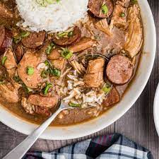

Chicken and Sausage Gumbo

A roux based soup with chicken, sausage, and rice
A Louisiana staple recipe that mixes a thick roux with chicken and sausage. It is combined with rice as a filler and usually has a cajun spice to it.
Ingredients
- Flour
- Oil
- Chicken
- Sausage
- Onions
- Celery
- Garlic
- Tabasco Sauce
- Chicken Stock
- Chicken Bouillon
- Garlic Powder
- Tony Chachere Seasoning
- Worcestershire Sauce
- Rice
Steps
- Cut up onions and celery
- Form and brown the roux
- Deskin and season chicken with Tony's and garlic powder
- After roux is browned, add vegitables
- Once vegitables are cooked down, add chicken
- Once chicken is cooked, add chicken stock and bouillon
- Season gumbo with Tabasco and Worcestershire to taste
- Bring to boil and cook chicken another 20 min
- Cut sausage and add to the gumbo
- Remove chicken, shred, and return to pot
- Cook rice, and serve
- (Optional) Top with chives or green onion
Return to main page